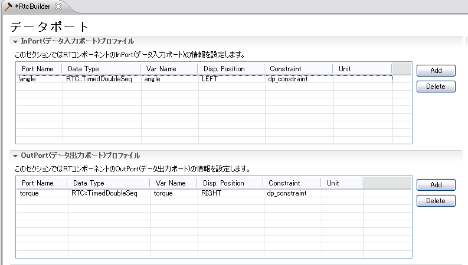
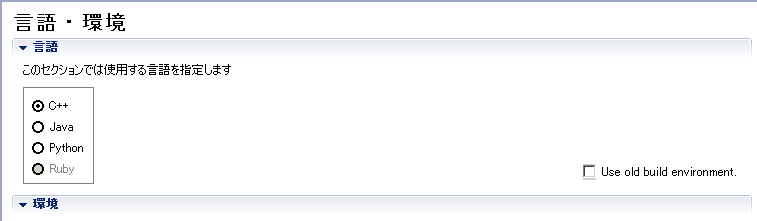

OverviewHere we describe the procedure of building a controller as an OpenRTM component, which makes a robot walk by PD-control based on a walking pattern file. Creating files
First, create a new folder as the working folder. (For example, let's say "mySamplePD".)
Note:
Walking Pattern FileHere we explain about the format of Waking Pattern File(angle.dat, vel.dat). Time <Joint-Data where JointID=0> <Joint-Data where JointID=1> .... <Joint-Data where JointID=n> One line corresponds to one frame, and each data in a line are delimited by tab. Time refers to the time-duration elapsed from starting-time. And Joint-data refers to Joint-angle(in angle.dat) or Joints' angular-velocity(in vel.dat). For instance, 29 joint-data of 6701 frames has been expressed in the given sample files for 14 seconds. Gain File
Gain file is used to keep records of PD-control gains. Basically it consists of a collection of
P-gains and D-gains. Each line corresponds to JointID number. An arbitrary number of P-gains and
D-gains (corresponding with JointID) can be written per line, delimiting with spaces. P-Gain D-Gain (<= JointID = 0) P-Gain D-Gain (<= JointID = 1) ... P-Gain D-Gain (<= JointID = n) Generating the SkeletonLet's generate the skeleton of the component. It is the SamplePD component having one Inport named "angle" and one OutPort named "torque". Case of RTC BUilder
Start RTC Builder.
Refer to the RTCBuilder-1.1.0 of an OpenRTM manual for the details of RTC Builder.
Open a activity page, and set up as shown in Fig. 2.
Open a data port page, and set up as shown in Fig. 3.
 Open a language and environment page, and set up as shown in Fig. 4. In the case of Linux, please check "Use old buid environment".
 Return to a basic profile input page, and push code generation button to generate the skeleton of the component. ProgrammingIn this section we describe you about programing concepts we have used, inside the generated source. SamplePD.hEdit the generated source file "SamplePD.h" as described below. First, uncomment both "onActivated" method and "onExecute" method to make them accessible within source. Now, add various members that use controller, as shown below. private: int dummy; std::ifstream angle, vel; // Joint-angle, Joints' angular-velocity double *Pgain; // Array of Pgain double *Dgain; // Array of Dgain std::vector<double> qold; // Preserve previous Joint-angle SamplePD.cppFirst, we declare header file includes and macro.
#include <iostream>
#define DOF (29) // Degree of freedom
#define TIMESTEP 0.002 // Time-step(time unit) of simulation
// File group
#define ANGLE_FILE "etc/angle.dat"
#define VEL_FILE "etc/vel.dat"
#define GAIN_FILE "etc/PDgain.dat"
namespace {
const bool CONTROLLER_BRIDGE_DEBUG = false;
}
Now, implement the method we declared in "SamplePD.h". Contructor can be added by "SamplePD::SamplePD".
SamplePD::SamplePD(RTC::Manager* manager)
: RTC::DataFlowComponentBase(manager),
// <rtc-template block="initializer">
m_angleIn("angle", m_angle),
m_torqueOut("torque", m_torque),
// </rtc-template>
dummy(0),
qold(DOF)
{
After "SamplePD::onInitialize()" is called, the walking pattern file is opened and the PD gain values are taken from the gain file and substitute to the variables.
RTC::ReturnCode_t SamplePD::onInitialize()
{
// Registration: InPort/OutPort/Service
// <rtc-template block="registration">
// Set InPort buffers
addInPort("angle", m_angleIn);
// Set OutPort buffer
addOutPort("torque", m_torqueOut);
// Set service provider to Ports
// Set service consumers to Ports
// Set CORBA Service Ports
// </rtc-template>
// <rtc-template block="bind_config">
// Bind variables and configuration variable
Pgain = new double[DOF];
Dgain = new double[DOF];
// Open joint-angle file
angle.open(ANGLE_FILE);
if (!angle.is_open()){
std::cerr << ANGLE_FILE << " not found" << std::endl;
}
// Open joint angular-velocity file
vel.open(VEL_FILE);
if (!vel.is_open()){
std::cerr << VEL_FILE << " not found" << std::endl;
}
// Open gain file and substitute to array
std::ifstream gain;
gain.open(GAIN_FILE);
if (gain.is_open()){
for (int i=0; i<DOF; i++){
gain >> Pgain[i];
gain >> Dgain[i];
}
gain.close();
}else{
std::cerr << GAIN_FILE << " not found" << std::endl;
}
// Ensure data length of torque and the joint-angle port by degree-of-freedom(DOF) of the robot
m_torque.data.length(DOF);
m_angle.data.length(DOF);
// </rtc-template>
return RTC::RTC_OK;
}
"SamplePD::~SamplePD" method is to release arrays and close the file. if (angle.is_open()) angle.close(); if (vel.is_open()) vel.close(); delete [] Pgain; delete [] Dgain; Initializing is done by "RTC::ReturnCode_t SamplePD::onActivated".
RTC::ReturnCode_t SamplePD::onActivated(RTC::UniqueId ec_id)
{
std::cout << "on Activated" << std::endl;
angle.seekg(0);
vel.seekg(0);
// Update the values of joint-angle InPort.
if(m_angleIn.isNew()){
m_angleIn.read();
}
// Preserve the values of previous frame.
for(int i=0; i < DOF; ++i){
qold[i] = m_angle.data[i];
}
return RTC::RTC_OK;
}
Edit the "RTC::ReturnCode_t SamplePD::OnExecute" method. This method is called in every step of simulation to update the commands.
RTC::ReturnCode_t SamplePD::onExecute(RTC::UniqueId ec_id)
{
if( CONTROLLER_BRIDGE_DEBUG )
{
std::cout << "onExecute" << std::endl;
}
// Update the values of joint-angle InPort.
if(m_angleIn.isNew()){
m_angleIn.read();
}
double q_ref, dq_ref;
angle >> q_ref; vel >> dq_ref;// skip time
// Calculate torque of each joint
for (int i=0; i<DOF; i++){
angle >> q_ref;
vel >> dq_ref;
double q = m_angle.data[i];
double dq = (q - qold[i]) / TIMESTEP;
qold[i] = q;
m_torque.data[i] = -(q - q_ref) * Pgain[i] - (dq - dq_ref) * Dgain[i];
}
// Outputs torque
m_torqueOut.write();
return RTC::RTC_OK;
}
CompileOn LinuxA file called "Makefile" will be generated automatically. On Linux environments, compiling is done by using this Makefile. make -f Makefile.SamplePD On Windows
"CMakeList.txt" for CMake will be generated automatically. # check doxygen installed #find_package(Doxygen) #if(DOXYGEN_FOUND STREQUAL "NO") # message(FATAL_ERROR "Doxygen not found.") #endif()
Please start GUI of CMake, set up required contents, choose the version of VC++, and generate a solution file. |